Task 5: Drift Detection with Terraform
Task 5 — Infrastructure as Code with Terraform¶
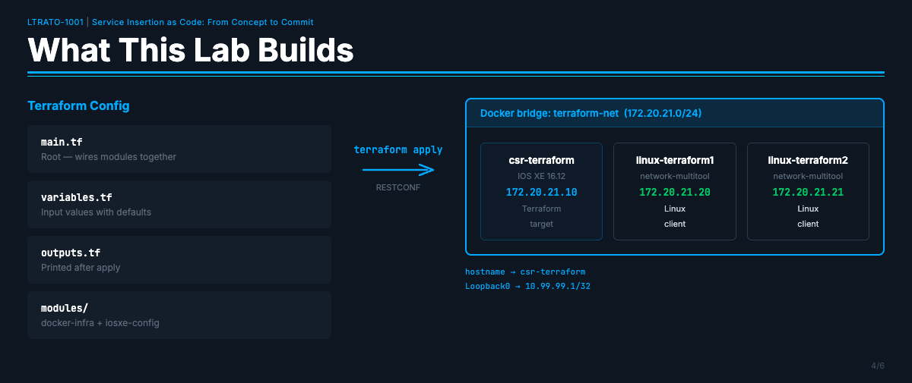
Objective¶
Use Terraform to provision a three-container Docker network and configure a Cisco IOS XE
router entirely via RESTCONF — all from a single terraform apply.
Before Task 5:
- No containers running; the terraform-net Docker network does not exist
- The CSR has no hostname or Loopback0 configured
After Task 5:
- Three containers deployed on a dedicated Docker bridge network (172.20.21.0/24)
- CSR hostname set to csr-terraform and Loopback0 configured at 10.99.99.1/32 via RESTCONF
- Drift simulated, detected with terraform plan, and remediated with terraform apply
- Everything torn down cleanly with terraform destroy
Why Terraform?¶
In Tasks 1–3 you used Ansible to push configuration to network devices over SSH. Terraform takes a different approach — instead of describing tasks to run, you describe the desired end state and Terraform figures out what to create, change, or destroy to get there.
This lab runs independently of the main ContainerLab topology. It uses a separate Docker bridge network and does not interfere with the LTRATO-1001 nodes.
Need a ContainerLab refresher? The ContainerLab Primer covers how the main lab topology is defined and managed.
Terraform also configures the CSR via RESTCONF (not SSH), so you will see a completely different protocol in action:
- Hostname →
csr-terraform - Loopback0 →
10.99.99.1/32(description: "Managed by Terraform")
Lab Topology¶
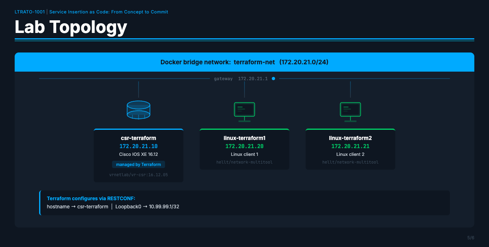
| Container | Image | IP | Role |
|---|---|---|---|
csr-terraform |
vrnetlab/vr-csr:16.12.05 |
172.20.21.10 |
Cisco IOS XE router — Terraform target |
linux-terraform1 |
ghcr.io/hellt/network-multitool |
172.20.21.20 |
Linux client |
linux-terraform2 |
ghcr.io/hellt/network-multitool |
172.20.21.21 |
Linux client |
Prerequisites¶
The lab server already has everything pre-installed and initialized:
| Tool | Version | Location |
|---|---|---|
| Terraform | v1.14.7 | /usr/bin/terraform |
| Docker | 27.5.1 | /usr/bin/docker |
sshpass |
— | /usr/bin/sshpass |
kreuzwerker/docker provider |
3.9.0 | ~/.terraform.d/plugins/ |
CiscoDevNet/iosxe provider |
0.16.0 | ~/.terraform.d/plugins/ |
Note: The server has no internet access to the Terraform registry. Providers are pre-installed in a local filesystem mirror.
terraform initreads from there — no download needed.
All Terraform files are in: ~/terraform-lab/terraform/
Part 1 — Explore the Configuration¶
Before deploying anything, take a few minutes to understand what Terraform will build.
Step 1 — Navigate to the Working Directory¶
Step 2 — Explore the File Structure¶
Run ls -la to see the full directory listing with permissions and sizes:
Expected output (timestamps and sizes may differ slightly — that is normal):
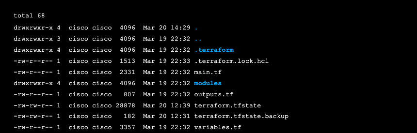
Why are there state files already? On a brand-new Terraform project,
terraform.tfstatewould not exist until after the firstterraform apply. The state files you see here exist because this lab environment was pre-tested and then cleaned up withterraform destroybefore you received it.
terraform.tfstate(183 bytes) — afterterraform destroycompletes, Terraform writes a near-empty state file rather than deleting it. The 183-byte size tells you it contains only the format header — no resources are tracked. You can confirm this withterraform show, which will printThe state file is empty.terraform.tfstate.backup— a copy of the full state from the lastapply, saved automatically by Terraform whendestroyran.terraform.tfstate.1774032510.backup— an older backup from a prior run.You will see this same pattern yourself at the end of Part 5 after you run
terraform destroy.
Here is what each file does:
| File / Directory | Purpose |
|---|---|
main.tf |
Root module — ties the two sub-modules together |
variables.tf |
All input variables with their default values |
outputs.tf |
Values printed to the screen after terraform apply |
modules/ |
Folder containing the two sub-modules |
.terraform/ |
Terraform's internal directory — provider plugins live here |
.terraform.lock.hcl |
Records the exact provider versions in use (like a lock file) |
terraform.tfstate |
Terraform's memory — currently empty (post-destroy residue). Will be populated after terraform apply |
terraform.tfstate.backup |
Automatic backup of the previous state, saved when destroy ran |
Now run ls -l modules/ to see what modules are available:
Expected output:
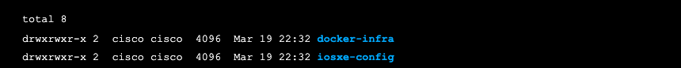
Step 3 — Read the Root Module¶
Expected output:
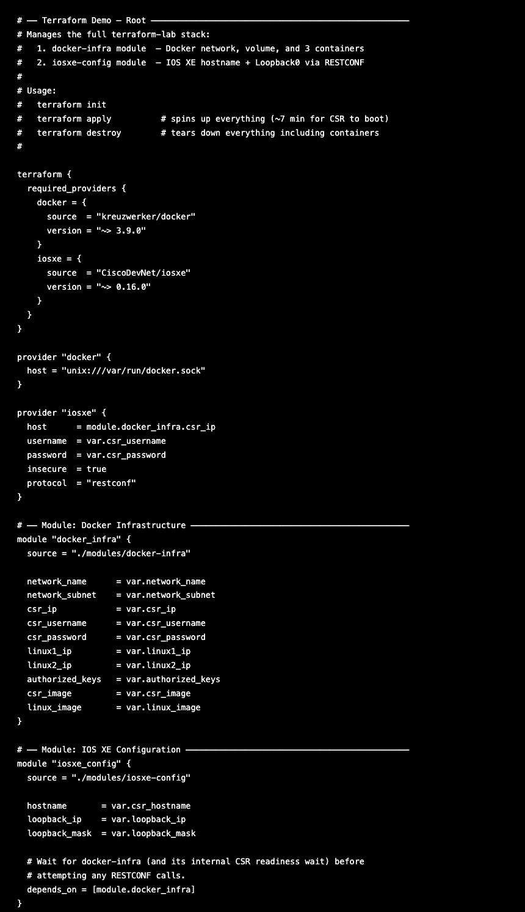
This is the entry point for the entire lab. Read through it and notice:
- The
terraform { required_providers { ... } }block declares which providers this configuration needs —kreuzwerker/dockerandCiscoDevNet/iosxe. - The
provider "iosxe"block tells the IOS XE provider where to connect: it points at172.20.21.10(the CSR container) and usesprotocol = "restconf". - The two
moduleblocks pull in the sub-modules from themodules/folder. module "iosxe_config"hasdepends_on = [module.docker_infra]— this tells Terraform to finish all docker-infra work (including waiting for the CSR to boot) before attempting any RESTCONF configuration. Without this, Terraform might try to configure the router before it has even started up.
Step 4 — Read the Variables¶
Expected output:
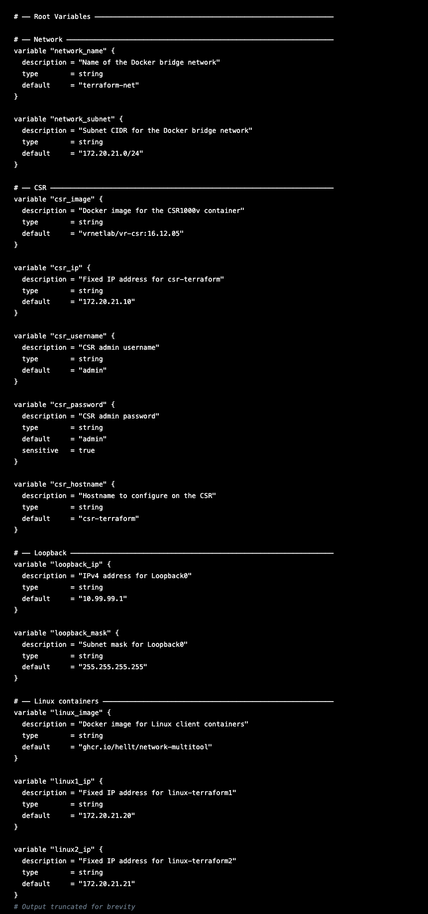
Each variable block defines an input to the configuration. All of them have default
values, so no manual input is required — Terraform uses the defaults automatically.
Key defaults:
| Variable | Default | What it controls |
|---|---|---|
csr_ip |
172.20.21.10 |
IP address assigned to the CSR container |
csr_username / csr_password |
admin / admin |
Login credentials for the CSR |
csr_hostname |
csr-terraform |
Hostname Terraform will configure on the CSR |
loopback_ip |
10.99.99.1 |
IP address for Loopback0 |
linux1_ip / linux2_ip |
172.20.21.20 / 172.20.21.21 |
IPs for the Linux containers |
You will also see an
authorized_keysvariable with two long SSH public keys. These are pre-loaded keys that allow the lab server to SSH into the Linux containers without a password. You do not need to modify them.
Step 5 — Read the Docker Infrastructure Module¶
Expected output (excerpt):
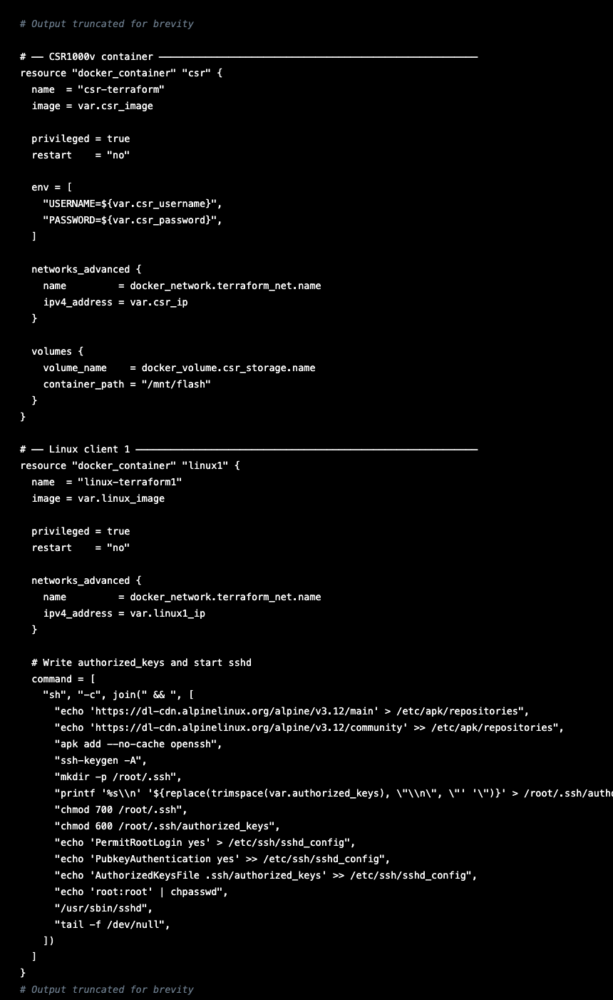
This module creates the Docker network, the storage volume, and the three containers.
Scroll down to find the null_resource.csr_ready block near the bottom. This is where
Terraform waits for the CSR to boot:
- It runs a shell script (
local-execprovisioner) that polls the CSR's RESTCONF API every 10 seconds. - If RESTCONF is not responding yet, it also tries to enable it over SSH.
- Once RESTCONF responds with HTTP 200, the script exits and Terraform proceeds.
- The CSR takes approximately 7-8 minutes to complete its cold boot from a fresh volume.
Step 6 — Read the IOS XE Configuration Module¶
Expected output:
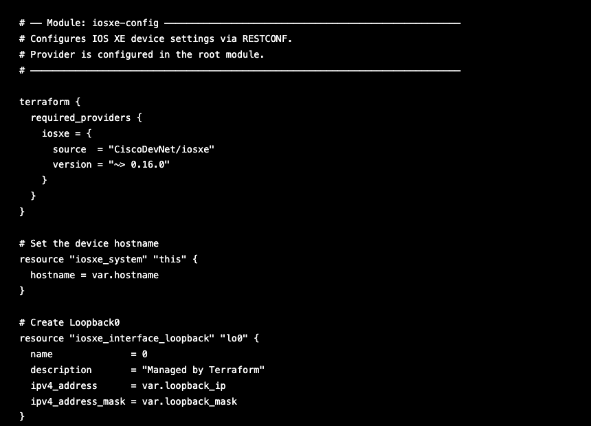
This module is simple — just two resources:
- iosxe_system.this — sends a RESTCONF call to set the hostname to csr-terraform
- iosxe_interface_loopback.lo0 — sends a RESTCONF call to create Loopback0 with IP
10.99.99.1/32
These two resources only run after module.docker_infra is fully complete (due to the
depends_on in main.tf).
Step 7 — Read the Outputs¶
Expected output:
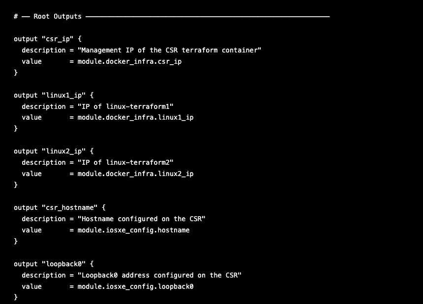
After terraform apply finishes, these five values will be printed to the terminal so
you can see a summary of what was deployed.
Step 8 — Initialize Terraform¶
terraform init prepares the working directory — it reads the provider requirements and
links them from the local filesystem mirror. Since providers are pre-installed, this is
instantaneous (no download).
Expected output:
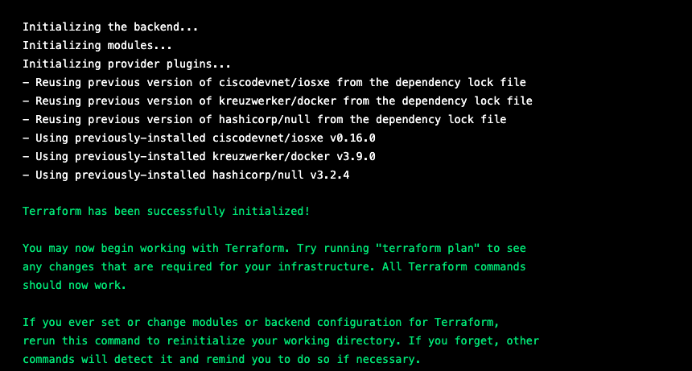
If you see
Terraform has been successfully initialized!you are ready to proceed.
Part 2 — Plan and Deploy¶
Step 9 — Confirm Nothing is Running Yet¶
Before deploying, verify the Docker environment is clean:
Expected output:
Expected output:
Step 10 — Preview the Deployment with terraform plan¶
terraform plan is a dry run. It compares your configuration against the current state
and shows you exactly what will be created, changed, or destroyed — without touching
anything.
Heads up: The full output is verbose — Terraform lists every single attribute of every resource it plans to create, most of which say
(known after apply)because the values won't exist until the resource is actually created. Scroll past the details and focus on the summary lines at the very bottom.
(known after apply)simply means "Terraform will fill this in once the resource exists." For example, a container's ID is not known until Docker creates it.
The summary at the bottom of your output should look like this:
Expected output (bottom of the plan):
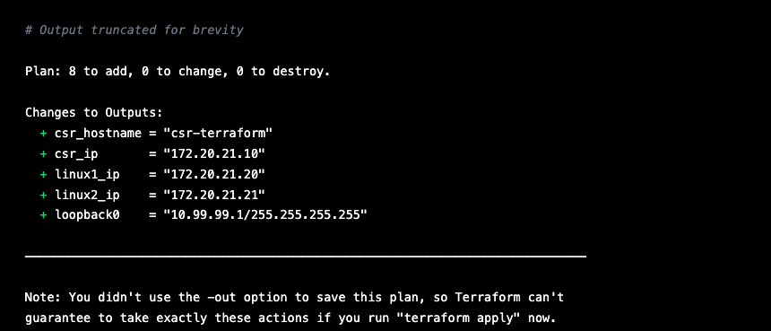
The Plan: 8 to add means Terraform is planning to create 8 resources:
module.docker_infra.docker_network.terraform_net— the bridge networkmodule.docker_infra.docker_volume.csr_storage— CSR persistent storage volumemodule.docker_infra.docker_container.csr— the CSR containermodule.docker_infra.docker_container.linux1— linux-terraform1module.docker_infra.docker_container.linux2— linux-terraform2module.docker_infra.null_resource.csr_ready— the readiness + RESTCONF provisionermodule.iosxe_config.iosxe_system.this— CSR hostname via RESTCONFmodule.iosxe_config.iosxe_interface_loopback.lo0— Loopback0 via RESTCONF
Nothing has been deployed yet.
planis always safe to run.
Step 11 — Deploy with terraform apply¶
The
-auto-approveflag skips the interactive confirmation prompt. In the lab we use it to save time. In a production environment, always omit this flag — Terraform will print the plan and ask you to typeyesbefore making any changes.
What happens next (in order):
- Docker network
terraform-netis created (~2s) - CSR storage volume is created (~0s)
- All three containers start simultaneously (~1s each)
- The
null_resource.csr_readyprovisioner begins — it polls RESTCONF every 10 seconds while waiting for the CSR to boot. This takes approximately 7-8 minutes. You will seeStill creating...messages ticking by — this is normal. Do not interrupt it. - Once the CSR is ready, Terraform applies the hostname and Loopback0 via RESTCONF (~1 second each).
While waiting, open a second terminal and watch the CSR boot progress:
Look for this line to confirm the CSR has finished booting:
Startup complete in: 0:07:XX
Press Ctrl+C to stop following the logs.
Why is the provisioner output suppressed? The
csr_passwordvariable is markedsensitive = trueinvariables.tf. Terraform automatically suppresses the output of any provisioner that uses a sensitive variable to avoid accidentally printing passwords to the screen. That is why you see(output suppressed due to sensitive value in config)instead of the polling loop messages.Expected output:
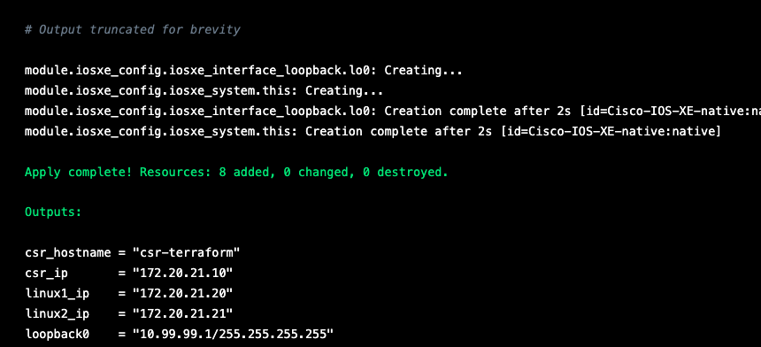
The hex IDs (like
[id=Cisco-IOS-XE-native:native]) will be different on your run.💡 Automation Insight: Notice the dependency ordering Terraform enforced automatically — the network had to exist before containers could attach to it, the CSR had to be running before RESTCONF config could be applied. You did not write any of that logic. You declared what you wanted; Terraform figured out in what order to build it.
Checkpoint — Part 2¶
- [ ]
docker ps --filter name=terraformshowed empty before deploy - [ ]
terraform planshowed Plan: 8 to add, 0 to change, 0 to destroy - [ ]
terraform applycompleted with Apply complete! Resources: 8 added - [ ] Outputs printed:
csr_hostname,csr_ip,linux1_ip,linux2_ip,loopback0
Part 3 — Verify the Deployment¶
Step 12 — Check Running Containers¶
Expected output:
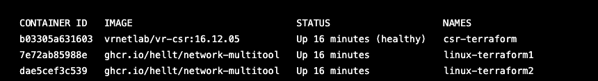
The CSR shows (healthy) — the vrnetlab healthcheck confirms the IOS XE VM is fully
booted and responding.
Step 13 — Check Container IP Addresses¶
Expected output:
Expected output:
Expected output:
Step 14 — Check Terraform Output¶
Expected output:
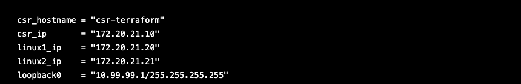
Step 15 — Verify RESTCONF is Responding on the CSR¶
curl -sk -u admin:admin \
-H "Accept: application/yang-data+json" \
https://172.20.21.10/restconf/data/Cisco-IOS-XE-native:native/hostname
Expected output:
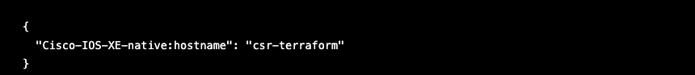
Step 16 — Verify Loopback0 Exists on the CSR¶
curl -sk -u admin:admin \
-H "Accept: application/yang-data+json" \
"https://172.20.21.10/restconf/data/Cisco-IOS-XE-native:native/interface/Loopback=0"
Expected output:
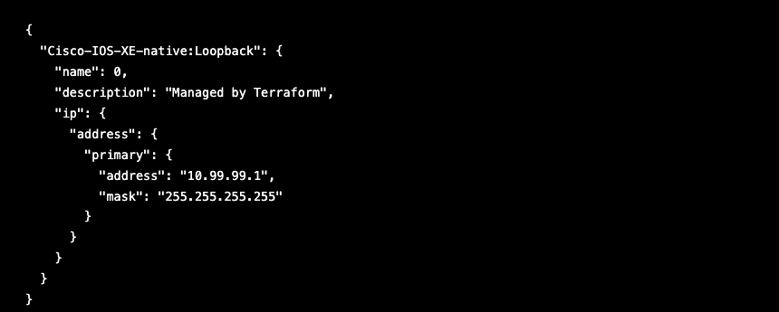
Step 17 — SSH into the CSR and Verify¶
The CSR is an older IOS XE image that uses legacy SSH algorithms. The extra flags below tell your SSH client to allow those older algorithms — without them the connection will be refused.
ssh -o KexAlgorithms=+diffie-hellman-group14-sha1 \
-o HostKeyAlgorithms=+ssh-rsa \
admin@172.20.21.10
Password: admin
If prompted with
Are you sure you want to continue connecting (yes/no)?, typeyesand press Enter.
Once logged in, you will see the IOS XE prompt (csr-terraform#). Run the following
commands:
Expected output:
Now verify that Loopback0 was created with the correct IP and description:
Expected output:
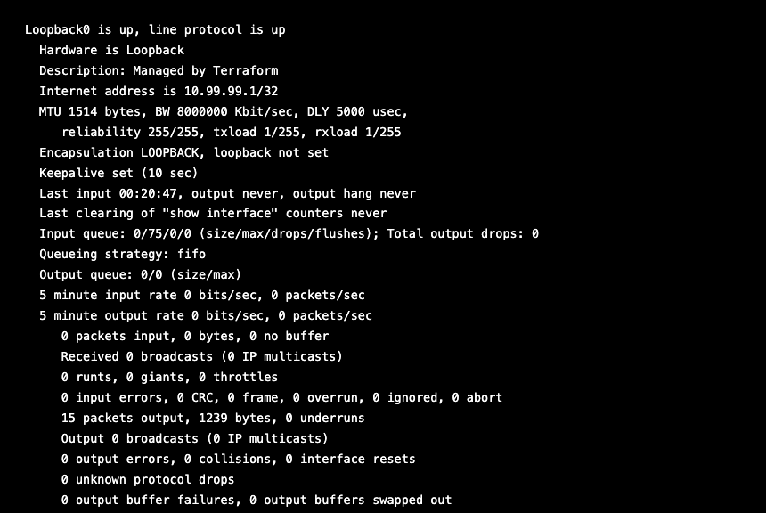
Type exit to leave the CSR.
Step 18 — SSH into a Linux Container and Verify¶
Before connecting: If you have connected to
172.20.21.20before (from a previous lab run), clear the old host key first to avoid an SSH error:
Password: root
If prompted with
Are you sure you want to continue connecting (yes/no)?, typeyesand press Enter.
Once logged in:
Note: The hostname is the short container ID, not
linux-terraform1. This is normal — the Terraform config does not explicitly set a hostname inside the container, so Docker uses the container ID by default. Your container ID will be different.
Expected output (interface number and MAC address will differ on your system):
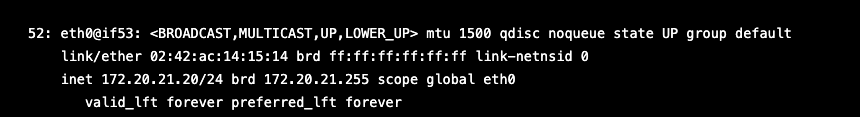
The important line is inet 172.20.21.20/24 — that confirms the container has the
correct IP address on the terraform-net network.
Type exit to leave the Linux container and return to the lab server.
Step 19 — Inspect the State File¶
Everything is deployed and verified. Before moving on, take a few minutes to look at
what Terraform actually recorded — the state file is what makes every subsequent
plan, apply, and destroy possible.
View the human-readable state with terraform show¶
Terraform reads terraform.tfstate and formats it for humans. The output lists every
resource it manages, with all the attribute values recorded at creation time. The output
is verbose — scroll through your terminal to see all 8 resources.
Here is a focused excerpt showing the IOS-XE resources and outputs:
Expected output (truncated — the IOS-XE resources and outputs section):
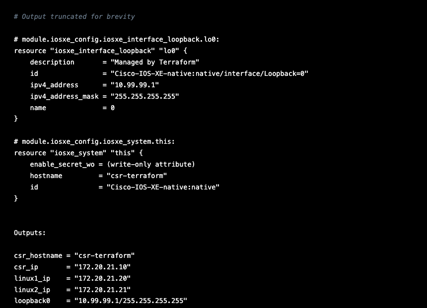
Notice the
idfields — for the IOS-XE resources these are the RESTCONF paths Terraform used to push config to the router. Terraform recorded them at creation time and will use them for every futureplan,apply, anddestroy.What the state file is doing for you:
Every
planreads it first. Terraform compares this file against your.tfconfiguration to calculate exactly what needs to change. If they match —No changes. If something is missing or different — Terraform shows you what it will fix.It is how drift gets detected. If a resource exists in this file but has been deleted outside of Terraform, the next
planwill flag it for recreation. You will see this in action in Part 4.It is how
destroyknows what to remove. Terraform reads this file to get the complete list of everything it created — container IDs, network IDs, volume names — and removes exactly those resources, nothing more.Never edit it by hand. If you manually change a value in this file, Terraform's view of the world will be wrong and subsequent operations will behave unpredictably. If you ever need to manipulate state directly, use the
terraform statesubcommands (terraform state list,terraform state show,terraform state rm).
Checkpoint — Part 3¶
- [ ] All three containers show
Upindocker ps - [ ] CSR shows
(healthy)status - [ ]
curlto RESTCONF hostname endpoint returned"csr-terraform" - [ ]
curlto RESTCONF Loopback endpoint returned10.99.99.1with description"Managed by Terraform" - [ ] SSH to CSR confirmed
hostname csr-terraformandLoopback0 is up - [ ] SSH to linux-terraform1 confirmed IP
172.20.21.20/24oneth0
Part 4 — Infrastructure Drift¶
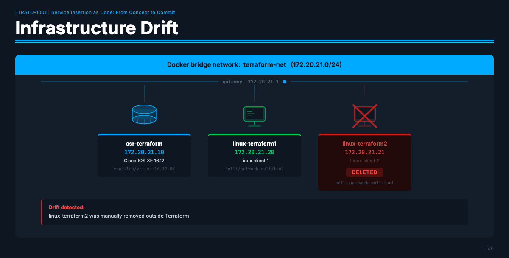
Infrastructure drift is what happens when the real state of your infrastructure no longer matches what Terraform expects based on its state file. This is one of the most common real-world problems in infrastructure management.
Drift can happen when:
- Someone manually deletes or modifies a resource outside of Terraform ("I'll just fix it quickly in the CLI...")
- A container crashes and is removed automatically by Docker
- An engineer makes a "quick fix" directly on a device instead of going through the IaC pipeline
In a traditional environment, drift often goes unnoticed until something breaks. Terraform can detect it and fix it automatically.
Step 20 — Simulate Drift: Manually Delete a Container¶
We are going to pretend to be a colleague who deleted a container by hand, bypassing
Terraform entirely. Without touching any Terraform files, directly remove
linux-terraform2 using Docker:
Expected output:
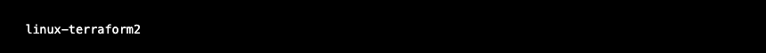
Step 21 — Confirm It Is Gone¶
Expected output:
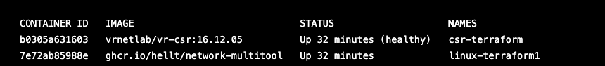
linux-terraform2 is missing. The infrastructure has drifted from the Terraform
configuration.
Step 22 — Detect Drift with terraform plan¶
Run terraform plan. Terraform will first refresh its state by checking the actual
state of every resource against what is recorded in terraform.tfstate. When it finds
that linux-terraform2 no longer exists, it will add it to the plan as something that
needs to be re-created:
Look for this in the output summary at the bottom:
Expected output:
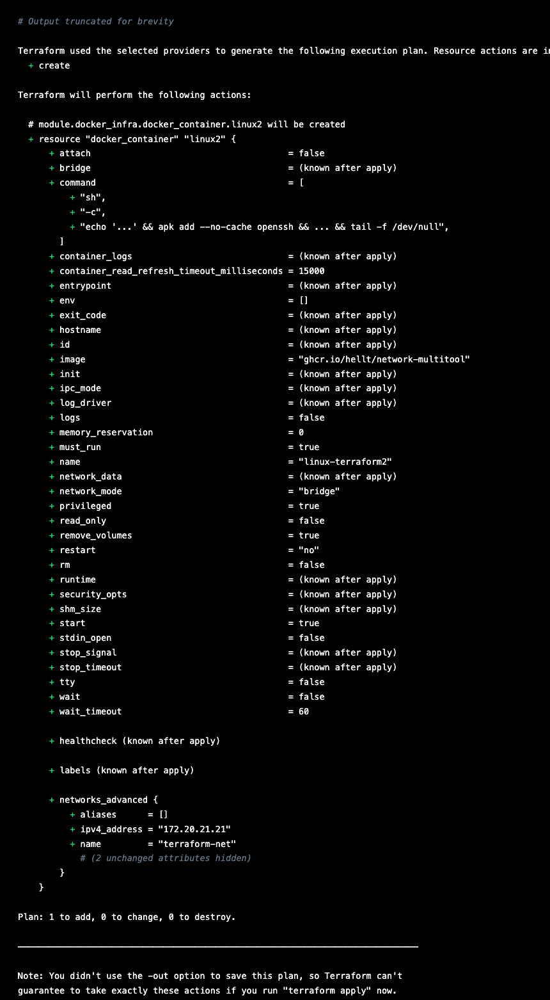
Notice the plan identifies exactly one resource to add —
module.docker_infra.docker_container.linux2— and confirms it withPlan: 1 to add, 0 to change, 0 to destroy.Terraform found the missing container and knows precisely what to fix, without touching anything else.
Step 23 — Remediate Drift with terraform apply¶
Run terraform apply -auto-approve. Because the CSR is already running and RESTCONF is
already active, Terraform only needs to re-create the one missing container. This
completes in under 2 seconds:
Expected output:
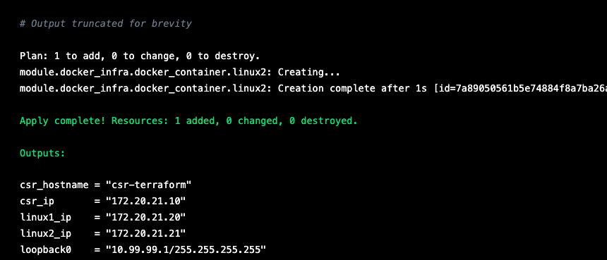
Notice that Terraform only created 1 resource — it did not touch the CSR, linux-terraform1, the network, or the volume. It only fixed exactly what was missing.
Step 24 — Confirm All Three Containers Are Running Again¶
Expected output:
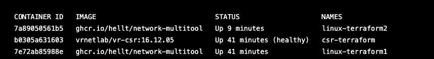
Note that linux-terraform2 shows a fresh uptime (8 seconds) while the others are still
at their original age — it was just recreated.
Step 25 — Verify terraform plan Now Shows No Changes¶
Expected output:
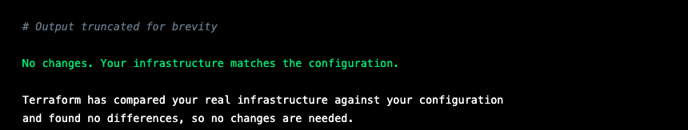
This is the Terraform "all clear." The real world matches the desired state exactly.
In a production IaC pipeline, seeing No changes when you run plan is the goal —
it means your infrastructure is exactly where you left it.
💡 Automation Insight: In production, teams run
terraform planon a schedule (via CI/CD) against live infrastructure. If the plan shows any changes, it triggers an alert — someone made an out-of-band change. The team can then decide whether to remediate (apply the plan) or update the code to match the new reality. Either way, drift is visible, not hidden.
Checkpoint — Part 4¶
- [ ]
docker rm -f linux-terraform2removed the container - [ ]
docker psconfirmed only 2 containers remained - [ ]
terraform planshowed Plan: 1 to add - [ ]
terraform applyshowed Resources: 1 added, 0 changed, 0 destroyed - [ ]
docker psconfirmed all 3 containers running again (linux-terraform2with fresh uptime) - [ ]
terraform planconfirmed No changes
Part 5 — Tear Down¶
At the end of this section, tear down the Terraform environment completely before moving on to the ContainerLab section. The CSR uses significant RAM (~3.5 GiB) that the ContainerLab topology needs.
Step 26 — Destroy All Resources¶
In the lab, use
-auto-approveto skip the confirmation prompt. In production, always omit this flag and review the destruction plan carefully before confirming.
Terraform destroys resources in the correct dependency order — IOS XE config first, then containers, then the network and volume.
Heads up: Just like
planandapply, thedestroyoutput is verbose — it lists every attribute being removed. Scroll to the bottom to see the final summary.
Expected output:
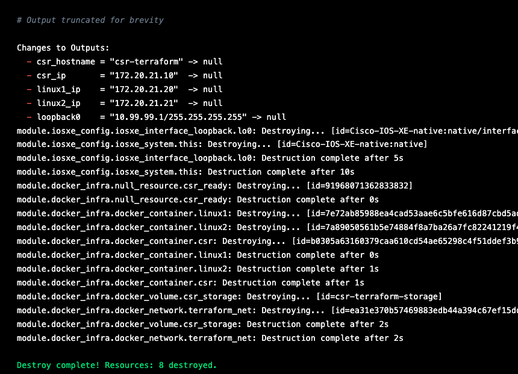
Step 27 — Verify Everything Is Cleaned Up¶
Expected output:
Expected output:

Expected output:
Step 28 — Confirm Terraform State Is Empty¶
Expected output:
Everything is clean. You are ready to move on to the ContainerLab section.
Quick Reference¶
| Command | What it does |
|---|---|
terraform init | Initialize working directory, download providers |
terraform plan | Preview changes — safe, makes no modifications |
terraform apply -auto-approve | Deploy or update infrastructure to match config |
terraform destroy -auto-approve | Remove all Terraform-managed resources |
terraform show | Display current state in human-readable form |
terraform output | Print output values |
docker ps --filter name=terraform | Check which Terraform containers are running |
docker logs -f csr-terraform | Follow CSR boot log |
curl -sk -u admin:admin -H "Accept: application/yang-data+json" https://<ip>/restconf/... | Query CSR via RESTCONF |
Summary¶
In this lab you:
- Explored a modular Terraform configuration managing both Docker infrastructure and
Cisco IOS XE device configuration from a single
terraform apply - Used
terraform planto safely preview changes before applying them - Deployed a three-container network lab including a Cisco CSR1000v router configured entirely via Terraform and RESTCONF
- Verified the deployment through Docker, RESTCONF API queries, and direct SSH
- Simulated infrastructure drift by manually deleting a container outside of Terraform
- Used
terraform planto detect the drift andterraform applyto remediate it in under 1 second - Performed a clean teardown with
terraform destroyand verified all resources were removed
The key takeaway: with IaC, your infrastructure is defined, versioned, and repeatable. Drift is detectable and correctable. The same configuration file that built this lab today will build the exact same lab tomorrow, next week, or on a completely different server.